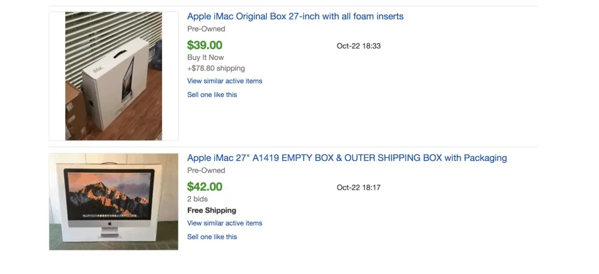

7 Weird (But Legal) Ways to Make Money
BY BOBBY HOYT JANUARY 13, 2020Finding weird ways to make money is something I’ve been doing since I was a kid. I would purchase my peers’ fundraiser candy and then sell it for more, build and sell birdhouses, or even sell the gold from video games that I played.
Looking back, I realize those weird ways to make money were just the beginning. I run two businesses now, and I’m helping my wife start hers (a YouTube channel that you should definitely check out).
I started my first business when I was in 7th grade. It was a car detailing company, that turned into my first passive income stream. I had people working for me while I was in school during the day or playing video games (and selling gold from them… gotta stack those incomes!).
Now that I’m an adult, I’m sticking to side hustles and business ideas that are completely legit, although outside of what most people consider to be “traditional” work.
So if you’re looking for weird ways to make money, I have some creative ideas ideas for you to check out.
1. Blogging
Believe it or not, you can actually make a good amount of money with a blog (my blogging business did 7-figures of revenue last year alone!). But as a professional blogger, I get a lot of questions about what I do… especially from confused neighbors and older relatives.
But I guess it does look pretty strange from the outside. The start up costs and regularly expenses are insanely low. My earning potential is nearly unlimited. And I make money in my sleep and doing things like hosting GIF-offs in my M$M Facebook Community.
That’s a really simplified version of what my job, and I did leave some stuff out, but it’s all true.
Before I explain more, let me be very clear about something — blogging is certainly not a get-rich-quick business model… I don’t think any legit ways are. It takes time to build an audience and monetize your website with ads, affiliate products, online courses, etc.
Once you do get it going… it can get crazy! I work from home most of the time, but I have the ability to work nearly whenever and wherever I want from my laptop. I know plenty of bloggers who even travel full-time while they run their sites.
And honestly, it doesn’t cost very much to start a blog. You can write about nearly anything and gain a following, and your expenses are very minimal. In fact, you can start your own blog for under $3 a month.
If you’re interested in starting a blog, a WordPress blog hosted through Bluehost ($2.95 per month) is the way to go for new bloggers. If you feel like the setup and installation process is a little too overwhelming, check out Launch That Blog. It’s completely free when you sign up with Bluehost.
If you want to learn more about starting and running a successful and profitable blog, go ahead and check out my free email course.
You’ll learn how to pick your blogging topic, how to name your website, how to make it look great, how to grow a social media following and find your first 1,000 true fans, how to monetize, and so much more!
START A BLOG (FREE DOMAIN AND SETUP)2. Create and manage Facebook ads for local businesses
One of the biggest ways that I was able to earn some extra money to put towards my student loan debt was by running Facebook ads for local businesses. Out of the weird ways to make money on this list, it might not be the weirdest, but it’s definitely not normal, haha.
Running Facebook ads for local business was one of the biggest ways that I was able to earn some extra money to put towards my student loan debt — I managed to pay off nearly $40,000 in just 18 months.
And this side hustle has grown in demand since I started doing it a few years ago, earning ad managers anywhere from $1,000-$2,000/month per client.
See, larger companies and brands already advertise on Facebook, but it’s only been in the last few years that smaller businesses have realized that Facebook ads could play a major role in helping them gain new customers.
It’s become the most requested service I’m seeing right now, and it’s not going away anytime soon.
Every small business owner sees Facebook ads on their personal Facebook page, but many of them don’t know how to run them effectively.
The crazy thing? Running Facebook ads really aren’t that difficult to manage in a way that sees real results.
Knowing that there is a market for people to help small business owners with Facebook ads management, and knowing this can be a great side hustle, I decided to create an affordable course for my readers. I teamed up with my buddy Mike Yanda (lawyer turned Facebook ads guru who now brings in $30,000/month running ads) to develop and teach the Facebook Side Hustle Course.
I started running this course in early 2018, and I’ve been hearing from some really happy students. I even have a few who are making around $5,000 per month running Facebook ads.
I was a band director before I started providing this service. If I can figure it out, you can too.
This is hands down one of the best 2020 side hustles, but it doesn’t take very much of your time. After you onboard a client and do the initial ad creation and audience testing (only takes a few hours), the ads essentially run out autopilot from then on.
If you want to start earning extra money to pay off debt or invest a little more every month, the Facebook Side Hustle Course is definitely for you.
LEARN MORE ABOUT THE FB SIDE HUSTLE COURSE3. Sell your old Apple boxes
Yes, you can sell your old iPhone, MacBook, iPad boxes and more. These are highly coveted, although I’m not sure why.
Seriously, look at these prices. For empty boxes!
In terms of weird ways to make money, you’re not going to make a ton of cash if you just sell the occasional Apple box you get when you upgrade your phone or laptop. But, it might be interesting to team up with some local computer shops or Best Buy.
It saves them the hassle of breaking down all of those boxes and makes you some easy cash!
You can sell the boxes on eBay, or check out these websites that will actually pay you for boxes:
Related: Mystery Shopping: Is it a Good Way to Make Extra Money?
4. Sell your poop
This might be the craziest thing I have ever heard, but hear me out!
You can sell your poop to for $40 per… uhh… donation.
While this is legitimately one of the top weird ways to make money, you’re actually helping someone in the process.
An organization called OpenBiome will pay for your poop to help people recover from an illness called C. difficile.
From the OpenBiome site:
“We are seeking healthy volunteer donors to provide life saving treatment for people with C. difficile infection. As reimbursement for their commitment, donors are paid $40 per donation of stool.
Half a million Americans contract C. diff infections each year. 1 in 5 patients find that the infection comes back, even after they take antibiotics. For these patients, daily life gets hijacked by the disease. 30,000 people die from the infection or related causes every year.
Where antibiotics have failed, a new treatment called fecal microbiota transplantation (FMT) made from donor stool cures 85% of patients after the first try.”
In order to sell your poop, you do have to pass a very rigorous test, and spots are limited. But if you can visit these three cities in Massachusetts and meet these qualifications, you could apply:
Labs in Boston, Central Square, or Summerville
You will need to visit on of OpenBiome’s labs at least three times a week for 60 days
You must be 18-50 years old
Your Body Mass Index (BMI) needs to be less than 30
OpenBiome will pay you $40/sample, and you need to drop off a sample at least three times a week. That’s $120 a week for your poop!
I learned about this from Alexis at Fitnancials, and you can read the full story here.
M$M tip: If you want some non weird ways to make money, read 13 Easy Ways to Make Money Fast in 2020,17 Best Side Hustles from Home , and How to Make Money: Top 44 Ideas for 2020.
5. Sell your college notes
If you’re in school right now and want to start paying down your student loans, you can sell your class notes for cash. There are several companies that will buy your notes from you, but StudySoup seems to be one of the better sites.
StudySoup pays Elite Notetakers up to $500 per course, and they’ve already paid out over $6,500,000.
Here’s what you need to know about selling your notes through StudySoup:
There is a short application process
StudySoup recommends filling out the following profile information to earn the most money: a short bio, profile pic, interests, GPA, major, and graduation year
All notes and study guides go through a quality assurance process and are evaluated on context, organization, and copyright
You are paid $35 for every subscription generated by a study material and $2 for each additional unlock
StudySoup pays via direct deposit or PayPal
If you’re interested in learning more, check out StudySoup.
6. Flip small RVs and campers
I actually know a few people in my town that do this on the side, and they make some serious cash!
One person takes old teardrop style campers and customizes them into some sweet retro-style campers that sell for thousands! The few other people I know who do this type of flipping typically make them more modern, but the concept is the same.
I’ve even heard of people flipping old scooters, mopeds, bikes, etc. It’s a way to turn a hobby into some extra cash.
Now, this isn’t something that can happen overnight. You need to have the right skills so that everything is safe. You also need to know how to market and sell your flips.
Related: How to Make More Money: A Total Beginner’s Guide for 2020
7. Create an Etsy store that sells crazy jewelry, weird sopas, etc.
True story — I used to know a guy that sold jewelry made from deer teeth… you heard me right!
Even more impressive, people actually bought it. And when I searched “deer teeth jewelry” on Etsy, I got over 200 different results. I had no clue the market was so big.
I’ve also seen Etsy sellers making money from soap that’s shaped like video game controllers and body parts, Nicolas Cage fan art, and even denture inspired rings. And people are buying this stuff!
Here’s the thing, creating and selling that kind of stuff on Etsy is not one of the most weird ways to make money online. It’s actually become a serious business for many makers and crafters around the world.
In fact, blogger/podcaster/Etsy shop owner Julie Berninger has turned her Etsy shop into a source of passive income by selling pdf printables. She even has her own Etsy printables course that teaches you how to start designing and selling printables.
LEARN ABOUT THE ETSY PRINTABLES COURSE